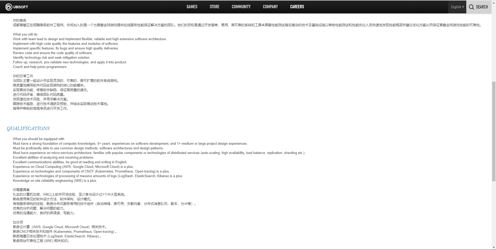
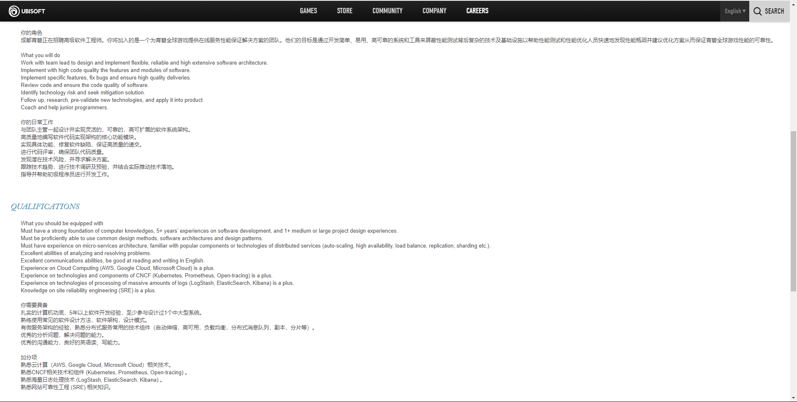

Introduction
My name is XinYu Chen, student ID is s3798356, student email is s3798356@student.rmit.edu.au . My nickname is Bruce. I come from the south of China where the climate is hotter than Melbourne, and it is also more humid. I come from China. Before coming RMIT for bachelor for IT, I had study in Chinese university for two years. Nowadays, everyone need to use internet and different application, and that is why I study in this subject—Information Technology. Before coming here, I have a little knowledge of html, java, c programming languages, and I hope to come to RMIT to learn more. I usually play pc game and exercise at a fixed time every week. I always running in park three times a week but COVD-19 break it. The difficult lockdown made my social entertainment almost all disappear
Interest in IT
What is your interest in IT? When did your interest in IT start? Was there a particular event or person that sparked your interest? Outline your IT experience (if any).
I think it is a very meaningful and proud thing to write a program that can solve many problems and facilitate many people. First of all, the IT industry is currently one of the most mainstream professions in the world. Learning IT means getting close to the world's mainstream technology and technology. All robot car control panel phones, including vending machines, etc., need IT technology to help them complete software or help them design a system. At the same time, this also means that IT can help us do a lot of things, so this also aroused my interest in IT.
Personally, I think my interest in IT is cultivated in my family life because my parents are engaged in the IT industry. So, since I was young, I have been very interested in electronic devices, because I can see them everywhere in my life. Motherboards, power supplies, memory, and CPUs were all in touch every day when I was very young, so I became interested in them. Want to understand how the system works, how to combine them, and program based on these hardware devices. I am very interested in these kinds of things. Thus, my parents are engaged in computer-related industries, so they became interested in the IT industry since childhood.
My study of information technology started when I was in BUNZ. Because I studied computer science and technology in BNUZ in China for two years. During this period, I have a certain understanding of Java and databases. And I hope to learn more programming thinking and programming methods at RMIT in the future.
Why did you choose to come to RMIT?
RMIT is a well-known international college. I like your open teaching environment and respect for the culture of international students. And the strength and industry recognition of the computer profession is also very high. At the same time, through the study of language classes, I have been exposed to part of the learning atmosphere and learning mode of RMIT. I think I like it very much.
What do you expect to learn during your studies?
I hope that through my studies at RMIT, I can enrich my knowledge of the IT industry and have a more practical and effective plan. And learn more practical programming techniques and be able to use them proficiently. In this process, it is also very important to get to know more like-minded partners, which will play a very important role in the future development and road.
Ideal Job
 

Really anything that continues to push me further...
... But to answer the question I would be looking at a Business Analyst role or Security Consultant in the future. I'm very much interested in the security field and business management, so I'd hope to move into one of those areas and continue learning of the many different facets of IT. While interested in transitioning into one of those fields, I would hope to have time available to allow for me to stay within the education sector.